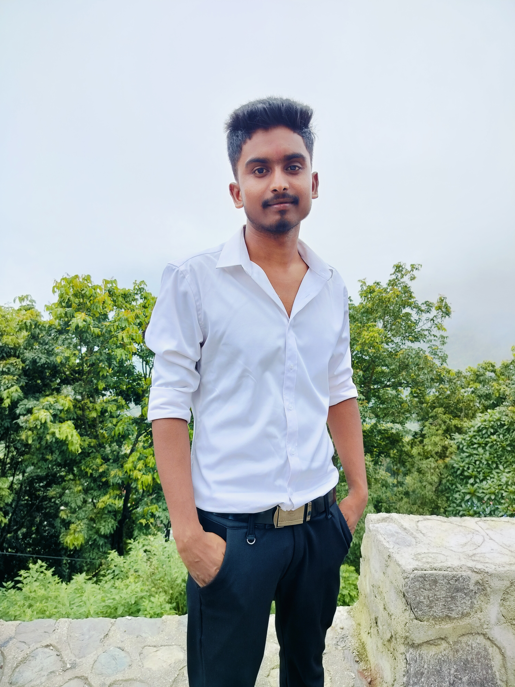

Santosh Yadav
Full Stack Developer
Often unseen but always indispensable, a Sub Engineer (Computer) is the silent hero who ensures technology never fails. Whether it's diagnosing complex system errors or strengthening network defenses, they keep the digital world running smoothly behind the scenes.
Hi ! I am Santosh Yadav, currently studies at Adarsh Secondary School. Biratnagar - 07